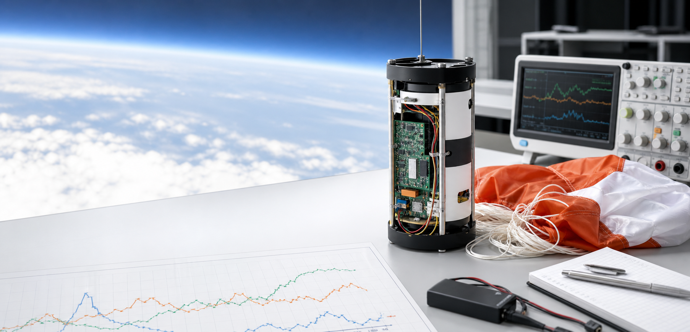

Browser demo · Manual Input Edition
Read the flight.
Understand the mission.
Turn a handful of field readings into a clear picture of descent, drift, and landing safety.
01
No account. No upload. Your readings stay in this browser.

Live mission sandbox
Run a flight check
Mission state
SAFE LANDINGWithin configured descent limits.
Descent time18.8 s
Wind drift90.2 m
Landing bearingNE · 62°
Projected flight profileAltitude / time
120 m0 m0 s · 42 s
What is measured
Small inputs.
Useful answers.
01
Descent profile
Estimate time to ground from current altitude and vertical velocity.
02
Vector drift
Resolve wind into north and east components for a landing bearing.
03
Safety state
Compare descent speed against your mission's configured safe limit.